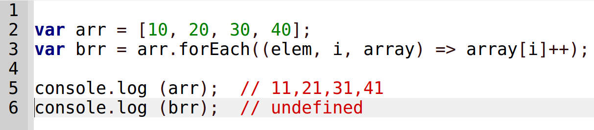

Your browser doesn't support the features required by impress.js, so you are presented with a simplified version of this presentation.
For the best experience please use the latest Chrome, Safari or Firefox browser.
Функциональное
программирование на примере функций работы с массивом.
ForEach(); Map(); Filter(); Reduce();
Зачем?!
Быстрее и понятнее // React(skill++)
Как создать ForEach()?
function addOneForEach(array) {
for (var i = 0; i < array.length; i++) {
array[i]++;
}
}
Передаем массив как аргумент
и мы что-то делаем на каждой итерации цикла.
А что если...
Как создать ForEach()...
Перенести действие в аргумент?!
function myForEach(array, action ) {
for (var i = 0; i < array.length; i++) {
action (array[i]);
}
}
myForEach([3,9,27], (a) => console.log (a = a + 1));
//4; 10; 28
Метод forEach()
Для каждого индекса i функция f
вызывается с тремя аргументами:
f(массив[i], i, массив)
Внимание: Метод forEach() ничего не возвращает.

А если нам нужен новый массив?
Функция, которая не портит переданный ей массив называется чистой.
Чистые функции: MAP, FILTER, REDUCE
Вот как работает MAP()

Вот как работает FILTER()

Они могут работать вместе MAP() + FILTER()

А что если нам не нужен массив, а нужно
одно, итоговое значение,
например сумма всего массива?
Значит пришло время вызвать REDUCE()!

Вы не любите REDUCE()? Вы просто не умеете его готовить!

Reduce за 5 минут:

Задание:
Напишите для массива
var arr = [1, 2, 3, 4, 5, 6, 7, 8, 9];
функцию, которая бы возвращала произведение четных чисел
напечатайте ответ в чат
PS проверка на четнось: (a % 2) === 0